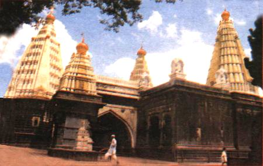

|
This temple is one of the 12 Jyotirlingas. This is also called Kedarnath and Wadi Ratnagiri. Mythology says, Jotiba helped Mahalaxmi in her fight with the demons. He founded his kingdom on this mountain. He belongs to the Nath cult. He was born in the hands of Vimalmbuja, the wife of the sage Pougand, on Chaitra Shukla 6. It is situated to the north of Kolhapur in the deep, surrounded by green mountains and black precipices. The original temple was build in 1730 by Navajisaya. It is 330' high from sea-level. The interior is ancient and the idol is four-handed. There are other temples and Light-towers. On Chaitra Poornima a big fair is held, when lacs of devotees come with tall (Sasan) sticks. Due to scattering of 'Gulal' the whole mountain is turned pink. Sunday is sacred to Jotiba. In the last few years much improvement has been made by the people and on the government level. A new scheme Plaza Garden has been under taken  |